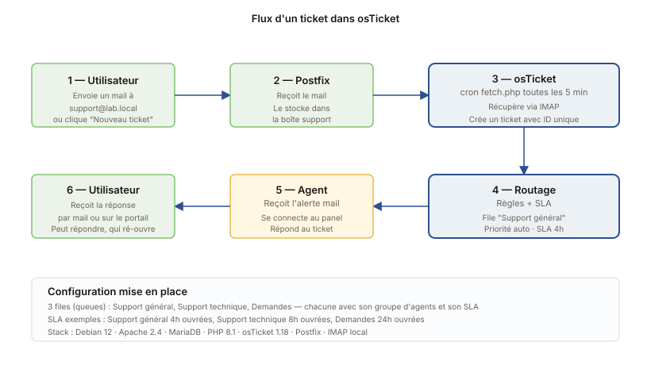

Mise en place d'un helpdesk avec osTicket
Déploiement d'un système de gestion de tickets open source sur Debian, pour comprendre le fonctionnement d'un service desk avant d'attaquer GLPI.
Le flux d'un ticket

Pourquoi osTicket d'abord
Avant de découvrir GLPI dans le cadre de mon alternance, j'ai voulu comprendre ce qu'était un système de gestion de tickets en partant d'un outil simple et focalisé sur cette seule fonction. osTicket est libre (GPLv2), léger, francisé, et s'installe sur n'importe quelle pile LAMP en quelques minutes. C'est l'idéal pour apprendre les concepts ITIL de base sans se noyer dans les options.
Installation
VM Debian 12
Une VM Debian 12 sur mon homelab Proxmox, 2 vCPU, 2 Go de RAM, 20 Go de disque. IP statique sur le réseau du labo. Hostname tickets.lab.local.
Pile LAMP
Installation classique : Apache 2.4, MariaDB 10.11, PHP 8.1 avec les extensions nécessaires (mysql, gd, mbstring, intl, imap, xml). Sécurisation de MariaDB avec mysql_secure_installation, création d'une base et d'un user dédiés.
osTicket lui-même
Téléchargement de la dernière version stable, dépôt dans /var/www/tickets, ajustement des permissions, création du VirtualHost Apache. L'assistant web démarre tout seul ensuite et guide la configuration de base.
Configuration des files d'attente
J'ai créé trois files (queues dans osTicket) pour simuler un service IT d'une PME :
- Support général — pour les questions courantes (mot de passe oublié, accès partage)
- Support technique — pour les pannes matérielles ou logicielles plus complexes
- Demandes — pour les nouvelles installations, créations de compte, etc.
Chaque file a son groupe d'agents dédié, sa priorité par défaut et son SLA (Service Level Agreement). Par exemple, un ticket dans "Support général" doit recevoir une première réponse en moins de 4 heures ouvrées.
Intégration mail entrante et sortante
L'intérêt principal d'osTicket c'est la création automatique de tickets depuis les mails reçus. J'ai configuré :
- Une boîte mail
support@lab.localcôté serveur Postfix - osTicket récupère les nouveaux mails via IMAP toutes les 5 minutes (
fetch.phpen cron) - Chaque mail crée un ticket, et chaque réponse au ticket repart en mail au demandeur
Au passage j'ai bien révisé les protocoles de mail (SMTP pour envoyer, IMAP pour relever, POP3 plus rarement). Comprendre ce qui se passe entre deux serveurs mail, c'est utile pour quand on doit débugger un dysfonctionnement.
Comparaison rapide avec GLPI
| Critère | osTicket | GLPI |
|---|---|---|
| Périmètre | Tickets uniquement | Tickets + inventaire + contrats + plus |
| Mise en place | 30 minutes | 2 à 3 heures (avec AD/LDAP) |
| Personnalisation | Limitée mais suffisante | Très poussée |
| Public cible | PME ou service IT léger | PME à grande entreprise |
En résumé, osTicket fait très bien sa seule mission, mais dès qu'on a besoin de gérer le matériel et les licences, GLPI devient incontournable.
Ce que j'ai appris
Le concept de SLA, c'est plus important que je ne pensais. Sans engagement de délai, les tickets pourrissent dans la file. Avec un SLA bien réglé, l'outil te rappelle à l'ordre, et tu priorises naturellement les vieux tickets en retard plutôt que les nouveaux qui font du bruit.
Je me suis aussi rendu compte que la qualité de la réponse compte autant que la rapidité. Un ticket résolu en deux heures avec une explication confuse, c'est moins utile qu'une réponse claire en six heures.